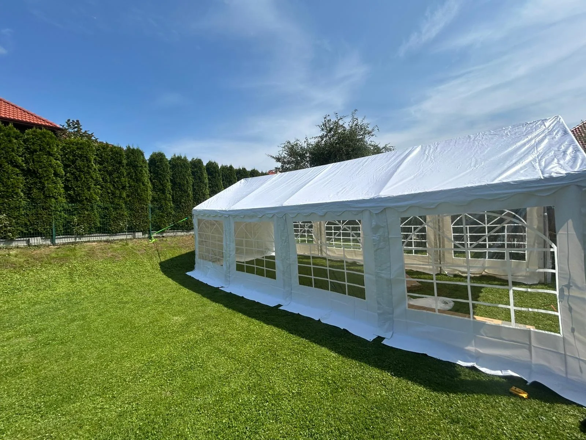

— 7-latka, 50-tka mamy, 30-stka ślubu. Trawa, dzieci, ciasto od babci, pies szczeka do gości. Namiot stoi w środku i zapewnia dach nawet jak zacznie padać.
Urodziny pod namiotem w ogrodzie to najcieplejszy typ eventu który stawiamy. Zero ciśnienia, zero sztywności, dużo ciast, dzieci biegają między nogami gości. Od 7-latki po 50-tkę mamy — każdy rozmiar.
Bo knajpa to knajpa — ale nie twój dom. A przy urodzinach chcesz żeby dzieciaki biegały po trawie, pies latał za nimi, a babcia mogła przynieść swoje ciasto bez awantury o "zewnętrzne jedzenie".
W cenie namiotu dostajesz dach, stoły, krzesła, oświetlenie podstawowe, girlandy LED, obciążniki, montaż i demontaż. Zero ukrytych kosztów.
Idealny na urodziny dziecka 7-10 lat. Odbierasz sam, sam stawiasz (2 osoby, 20 min).
Rodzinne urodziny 40-50 gości, 18-stka, okrągła rocznica. My stawiamy i zwijamy.
50-tka, 60-tka mamy/taty, zjazd rodziny. Dach nad wszystkimi, nawet jak leje.
Pierwszy event firmy — urodziny córki znajomych. Ogród rodziców, piątek popołudnie. Dzieci biegały po trawie, 15 dzieciaków + 10 rodziców, tort, balony z lamy, pies szczekał na gości. Namiot 4.5×3 ekspres, rodzina sama odebrała i postawiła. Zwrócili w niedzielę rano. "Pierwsze polecenie — do dziś procentuje", mówi Patryk.
Namiot ma boki, chroni przed bocznym deszczem. Przy normalnym deszczu (nie wichura) — impreza normalnie się odbywa. Jak prognoza jest zła, możemy przełożyć bez opłaty (do 48h przed).
Na urodziny — 2-3 tygodnie w sezonie. Zdarza się że dzwonią w środę na sobotę i akurat mamy wolny namiot — możesz spróbować, ale lepiej wcześniej.
Tak. Mocujemy obciążnikami (żadnego wbijania kołków w trawnik), potrzebujemy tylko równego terenu o wymiarach trochę większych niż sam namiot (np. dla 4×8 potrzeba 5×9). Podjazd dla busa = mile widziany.
Nie mamy, ale podpinamy — znajomi partnerzy dostarczają dmuchane zamki dla dzieci. Dzwonimy, ustalają z Tobą bezpośrednio. My spinamy kontakt, nie rozliczamy.
— wypełnij formularz lub zadzwoń. oddzwonimy w 2h.
